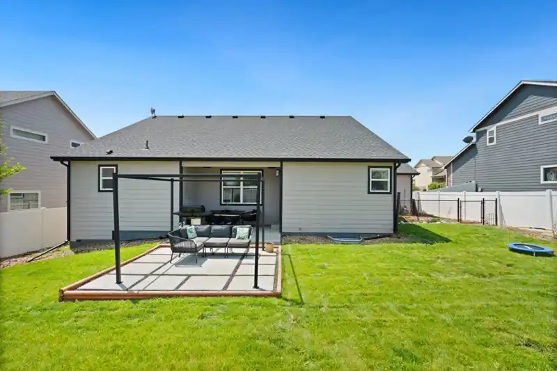
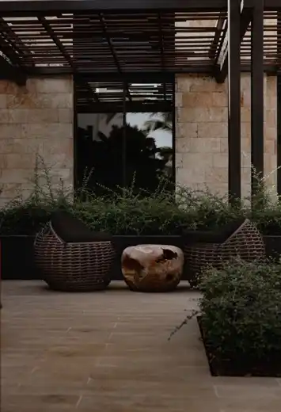
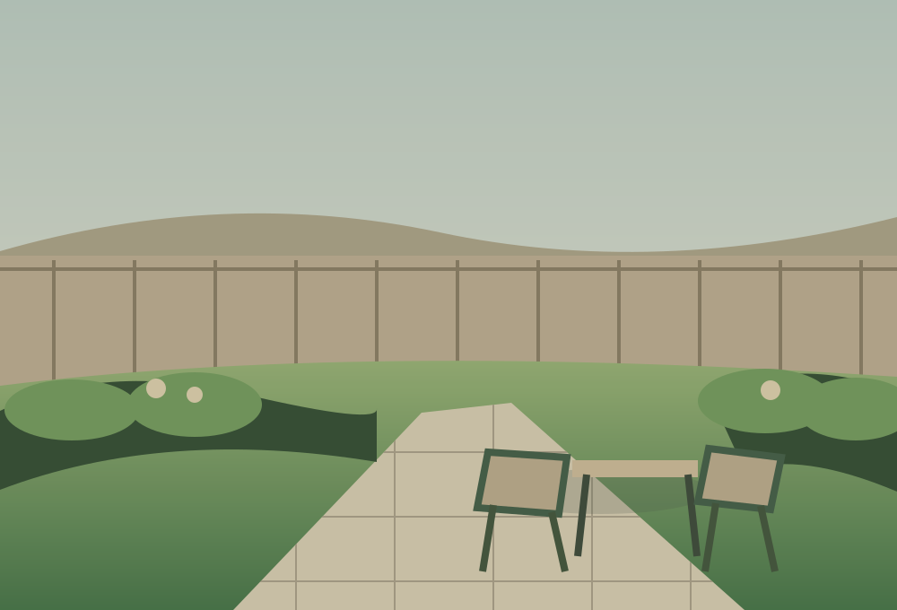
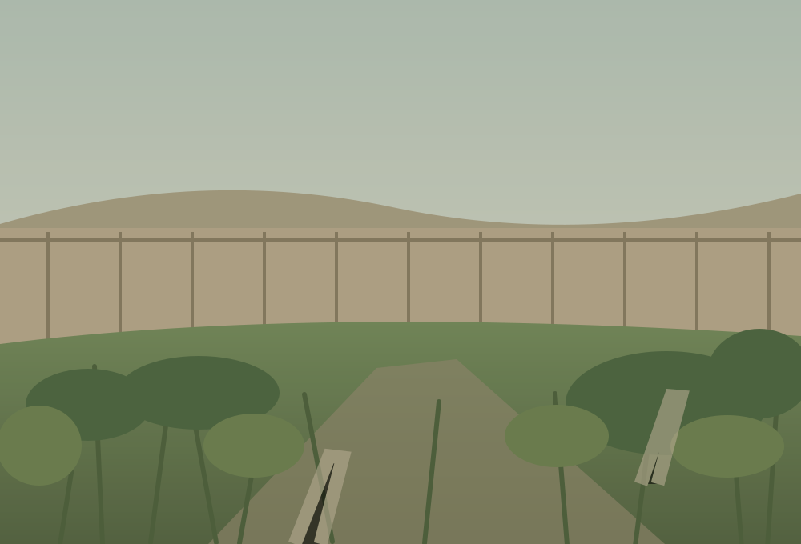

DROYLSDEN · MANCHESTER
A better
space starts
outside.
From a garden that needs a little love to an outdoor space with a whole new outlook.

AN OUTDOOR SPACE TO CALL YOUR OWN
Scroll to explore
GARDEN CARE / LANDSCAPING / OUTDOOR LIVING
01 / A FRESH PERSPECTIVE
Your garden has
more potential
than you think.
Good gardens are made to be lived in. Whether you want to reclaim an overgrown lawn, update your patio or just keep everything looking its best, Mow N Go offers practical garden and landscaping services.
↘02 / WHAT WE DOTHE RIGHT CARE FOR EVERY CORNER
Made for
every outdoors.
Small improvements. Big ideas. A helping hand that makes outside feel like yours again.
03 / PICTURE THE POSSIBILITIESIMAGINE YOUR SPACE DIFFERENTLY
Less “what if”.
More “why not?”
Explore a few ways a garden can feel different. These stock photographs show garden design inspiration, not completed Mow N Go projects.

It's not about having the biggest garden. It's about making the most of the one you've got.
Start the conversation04 / A NEW WAY TO SEE ITSee the
See the
difference.
Drag the handle to explore a garden makeover illustration. This is a visual concept — not a documented before-and-after customer project.
DRAG THE HANDLE TO EXPLORE


05 / LOCAL ROOTSGARDENS AROUND MANCHESTER
Local gardens.
Proper care.
Based in Droylsden, Manchester, Mow N Go provides garden care and landscaping services for domestic and commercial properties. See their independent customer reviews before getting in touch.
BASED INDROYLSDEN
MANCHESTER
MANCHESTER
06 / LET'S GET STARTEDLet's make
Let's make
more of outside.
Tell us what you need help with and we'll open WhatsApp with your enquiry ready to send. No account or website form submission required.
Prefer a quick call? 07460 284744 ↗